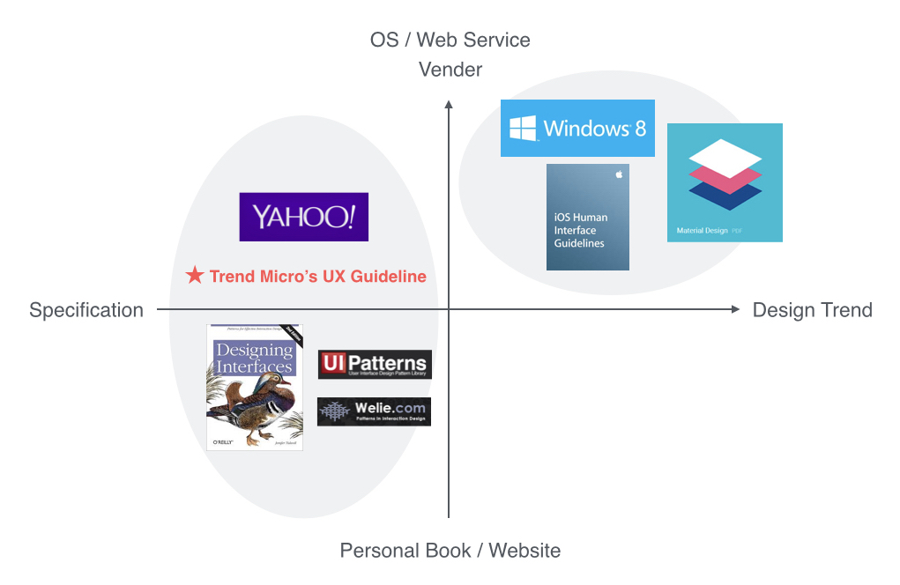

UI/UX Design Internship
In summer 2014, I interned at Trend Micro HIE (Human Interface Engineering) Enterprise team as a UI/UX Designer. During the internship, I redesigned the internal UX guideline landing page & content structure, and supported in the design of "Move Client" feature for OfficeScan.
UX Design / Research
Focus Group, Interview, Competitor Analysis, Card Sorting, User Flow, Wireframe, Prototype
June - Sept 2014
This is an individual project working on analyzing & prototyping "Move Client" feature for OfficeScan MAC version, an enterprise information security product that secures endpoints with protection against malware threats. With "Movie Client" feature, IT managers can select one or multiple clients (endpoints) and specify a new domain or OfficeScan server in the case of migration.
The feature is under: Agents > Agent Management > Manage Client (Agent) Tree tab > Move Agent
Based on the given design document and the functional requirement, I analyzed 4 case scenarios, including 1 normal flow and 3 error handling situations. I strategized different scenarios into a taskflow, communicated with engineers to clarify the whole server transter process, designed the interaction, and then conducted hi-fi Axure protoype.
IT manager / Information security administrator
Trend Micro UX guideline is an internal online reference for people who need to deal with user interfaces and solve common design problems. The goal of this redesign project is to create a simple format with critical elements that allows every designer to align with and focus on delivering the landing page in a more effective and meaningful way.
The challenge I faced is labeling and terminology as the "language" and the page structur"e used varied between different UI Designers when they create content for UX guideline. Therefore, it causes the inconsistency of the content structure. Besides, it lacks the version control and time indications to tell users what have been updated. On the other hand, the blog style of the landing page makes users hard to find stuffs they need.
To gather more information about the format of content structure, I researched on popular guidelines in the market, compared scope, purpose, attitudes, etc, and then defined our own positioning.
Card sorting method is used to analyze and evaluate the content structure. I reorganized the table of content of each UI component page into categories and then defined which label should be applied in each section.
I conducted a focus group with one design team and one-to-one interview with 6 UI Designers in order to understand:
Information is scattered in other internal resources, e.g. visual guidelines. Also, designers are not sure about corresponding components to a product.
Designers can’t find a specific UI component quickly, as some of them have various names. Designers spend time on recalling the content by browsing pages.
Designers don’t know whether a UI component is out of date. Blog style with several comments also make them feel hard to decide which one is the best practice.
Presented the new landing page and content strcture that is flexible enough to accomodate all of different terms used to UX managers and designers, and got the proposal widely accepted across the team.
Understand business goals and the domain knowledge and incorporate into the design.
Cover the detailed interactions, variations, and error handling cases. Synthesize the messages to users in a systematic way.
Design concept and UX methods applied are important, but clear communication is the major key to sell ideas.